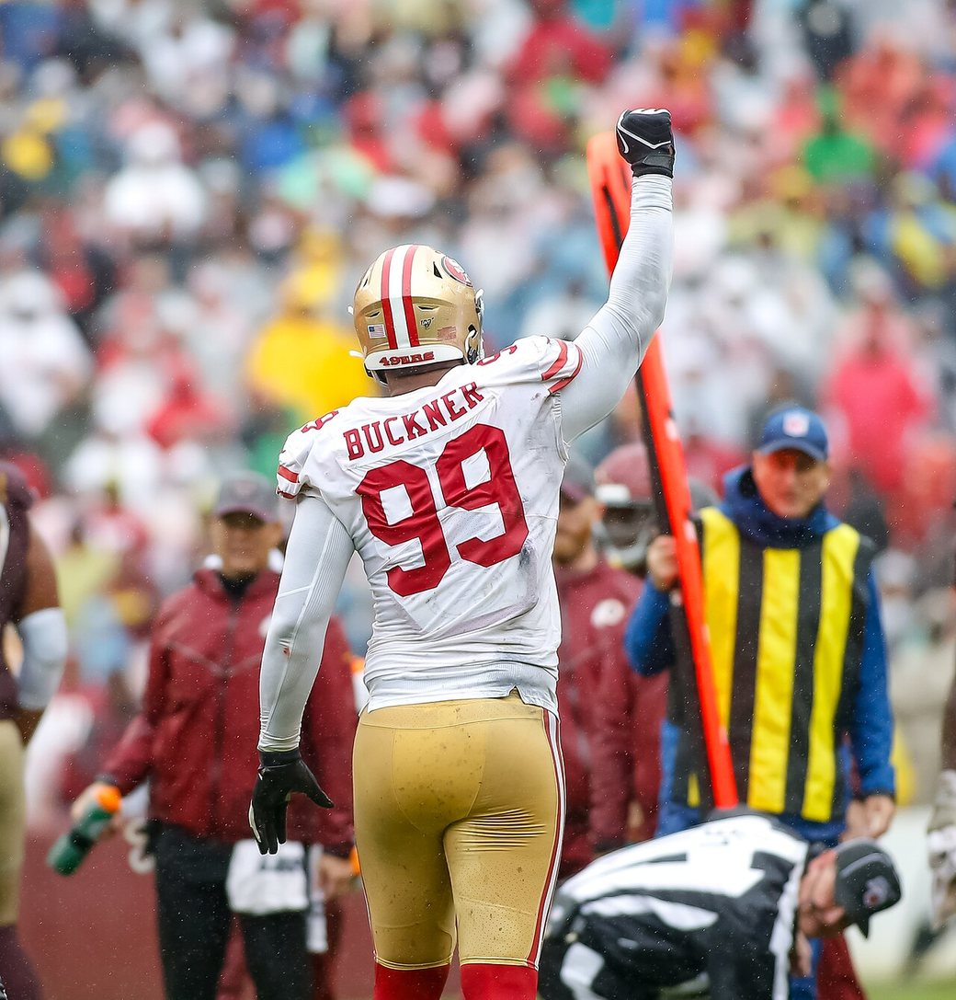
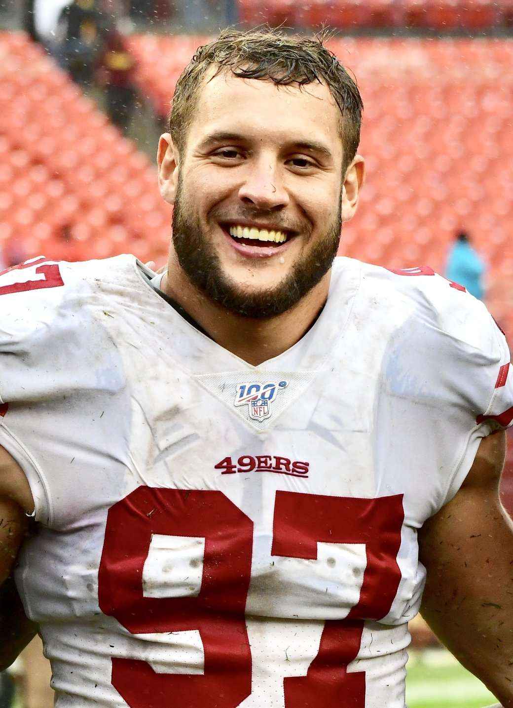

He's Home. DeForest Buckner Is a 49er Again, and the Front Just Changed.
A 2027 fourth. A bye week to teach him the calls. A 6 and 1 team that just went and got the man in the middle back, on the same afternoon Seattle bought itself a wall.

I was at the sink again. Same kitchen as March 2020, same phone, same bad habit of reading football with wet hands. Last time the sentence that came out of me was "for a pick?" This time I laughed before I finished drying off.
DeForest Buckner is a 49er again.
A 2027 fourth. That's the whole bill. Last week I sat here and begged John Lynch to give a third and feel proud of himself, and he beat me by a round. Indianapolis is helping with what's left on the check, so we aren't even swallowing the full $26.6 million cap hit on a roster that's been sitting on a little over $41 million, the most room in the league. One year left. No dead money behind it. If he loves being home, you talk in March. If he walks, he walks.
I can live with a rental. I've been living without him since the week the Bay shut down.
The price just got reversed
I'm not going to play neutral about this. The 99 is on the bed. It hasn't made sense in my head since they shipped him to the Colts for the 13th pick, traded down one spot, and took Javon Kinlaw at 14. I already wrote that scar. I'm only opening it to say the math flipped. We gave away a first round talent for a pick that never became him. We just bought the same man back, six years older and still starting every week, for a fourth.
He's 32. Turns 33 in March. Seventh overall out of Oregon in 2016, the kid from Waianae, the long arms, number 99. Three Pro Bowls, one of them in our building. First team All Pro his first year in Indianapolis, a sentence I have never enjoyed. Last season a herniated disc in his neck shut him down after ten games and four sacks. This year he has started all seven. Thirty one tackles. Four sacks. A fumble recovery. Same sack total as all of 2025, and he did it on a 2 and 5 team that fired Chris Ballard and then, this afternoon, sold the two pillars. Quenton Nelson to Seattle. Buckner to us.

What actually moves
A reunion is a feeling. A feeling doesn't stop a guard. So here's the football, because that's the part I'm thrilled about and the part I don't want to romanticize in the same breath.
The middle of this defensive line has been a rumor since Australia.
Alfred Collins tore his patellar and he's done for the year. C.J. West is on IR with the knee, and nobody sensible expects him the week after the bye. Sam Okuayinonu's foot was repaired before we played a down. For a stretch the only grown bodies up there were Osa Odighizuwa, Keion White, and a rookie. Osa has been good. I'm not taking a word of that back. White leads the club with 3.5 sacks, which tells you what the pass rush has been asked to do while Nick Bosa sat. Lynch called this group a bunch of little Chihuahuas that swarm you. They've swarmed. They've also been moved when a real offense decided to lean, and I watched enough of that 29 to 20 in Atlanta to turn the tablet off before the two minute warning.
Buckner is six foot seven, and he has spent a decade being the man a coordinator has to double. That's the change. A second blocker has to go find him. It can't also go find White. And it can't also go find Bosa on the days Bosa is actually out there.

Bosa has played two games. The calf has owned everything since the week before Arizona. This afternoon's injury report finally has him questionable for the Raiders instead of just out, and I'm not circling the name in pen until I see him run. If he's on the field November 8, this front is a problem an offense didn't have on Sunday. If the calf lies again, we still just added the best interior lineman we've had since the guy we added.
I heard that last sentence while I was typing it. I'm leaving it.
Seattle bought a wall. We bought the hammer.
Same Tuesday. The defending champs sent a 2027 third and a 2028 fifth to Indianapolis for Quenton Nelson. Eight time Pro Bowl guard. The best pure people mover of his generation, landing in our division, on the team we have to go through if this 6 and 1 thing is real.
So this isn't only a bye week souvenir. It's an answer. They bought a wall. We bought the hammer that hits that wall. Nelson against Buckner is a December problem I'm genuinely excited to have, which is a sick thing to say about two men on the wrong side of 30, and I mean it. Our interior rush just got a veteran who lives in double teams. Their interior protection just got a legend. The NFC West didn't get quieter today. It got meaner, and we're 6 and 1 while it happened, coming off the first loss, with a week to sit still and install.
Raheem Morris's front wants length, and it wants somebody who doesn't get walked on third and one when the weather turns and the other team stops being cute. Buckner was a run defender before he was a pass rusher when he was ours, and that order is the one I've been scared we didn't have once the Chihuahuas hit a wall. Four sacks in seven games says the pass rush piece didn't retire. Put him next to Osa and somebody has to pick a side. When Bosa is healthy, somebody has to pick from three. Sebastian Valdez and the young guys get to be a rotation instead of the plan.
The neck is the part I won't romance. Surgery last year is surgery. He's 32. If the training staff, who I have yelled at on this site more than once, tells Lynch the disc is a problem, then the fourth was still the right bet and I'll be mad in a different paragraph. I'm a homer. I'm not an idiot. Both of those can be true while the jersey is on the bed.
The week we got for free
Week 8 is the bye. There's no game to waste him in. A week of meetings, a week of walkthroughs, then the Raiders at Levi's on November 8 at 1:25. He hasn't been in this building since 2020. The calls are Morris's, not the 2019 defense he left, and I'm not putting the Super Bowl version of him on the field in my head for Las Vegas. The floor moved. That's the claim. Not a coronation.
Somebody has to come off the roster to make the spot. I don't know who, and I'm not going to invent a name so I sound informed. That's a bad Tuesday for one player and a good Tuesday for the other 52.
Deebo's already home. Greenlaw's already home, suspension and all. Kittle was yelling about the boys being back before my hands were dry. Warner's still here. Bosa's still here, calf and all. The reunion tour was cute when it was a receiver and a linebacker. A defensive tackle isn't cute. A defensive tackle is how you play in January, when the other team stops throwing and tries to make you prove the middle is real.
Christian McCaffrey's hamstring is on that same questionable list, with Deebo and Mike Evans. I'm not going to pretend the building is healthy because the one hole I yell about got filled. Atlanta was a 29 to 20 loss. The first one. The offense has its own list. Buckner doesn't catch passes.
I know the objection, because I made it to myself between the laugh and the text to my dad. He's old for the spot. It's one year. The neck. Seattle didn't get worse today. A fourth in 2027 isn't nothing on a roster that's going to need cheap bodies. I said all of that standing at the sink.
Then I looked at what we paid in 2020 and what we paid today, and I stopped arguing with myself.
My dad texted "about time." Two words. He still calls him Buck. The group chat sent the Kinlaw draft photo, because this chat has one joke and it's six years old. I sent back the jersey on the bed. Nobody typed anything for a minute. That's as close as we get to church.
The deadline is November 10. I already got the thing I was begging for, which makes me suspicious, because this franchise doesn't usually grant the wish on the first phone call. If Lynch is in a spending mood I won't talk him out of it. I also won't pretend number 99 fixes the calf, or Collins, or the simple fact that we still have to play the games. The week by week is on the schedule hub. Who's actually standing is on the injury report and the depth chart. The long version of how we got here is the defensive line piece from last month. Everything else lives on the 49ers hub.
The 99 is on the back of the chair. I'm not putting it on until I see him in our colors.
November 8. Levi's. We'll know pretty fast if the middle is a grown man's job again.
More coverage: 49ers · NFL · Bay Area Sports Blog home